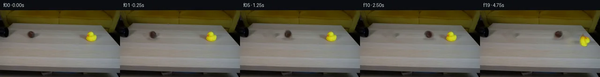

![首帧]()

Round 00
2026-11-04T20:00:24.647373+00:00像素候选变化代码 +183/−0inspection 更新
pixels 316ec08b46603b32 · code e9467650a0ed778f
查看本轮 generate.py 真实 diff
--- previous/generate.py
+++ current/generate.py
@@ -0,0 +1,183 @@
+#!/usr/bin/env python3
+"""Generate the locked-camera 20-frame ball/duck interaction.
+
+Only local source pixels and deterministic image operations are used. The
+first frame is never processed: it is copied directly into the output tensor.
+"""
+
+from pathlib import Path
+
+import cv2
+import numpy as np
+from PIL import Image, ImageDraw
+
+from artifact_io import save
+
+
+ROOT = Path(__file__).resolve().parent
+W, H = 256, 144
+BALL_CENTER = (65.0, 52.0)
+DUCK_PIVOT = (194.0, 67.0)
+
+
+def soft_ellipse(cx, cy, rx, ry, edge=1.2):
+ """Antialiased float alpha for an ellipse."""
+ yy, xx = np.mgrid[0:H, 0:W].astype(np.float32)
+ d = np.sqrt(((xx - cx) / rx) ** 2 + ((yy - cy) / ry) ** 2)
+ return np.clip((1.0 + edge / min(rx, ry) - d) * min(rx, ry) / edge, 0, 1)
+
+
+def dilate_mask(mask, radius):
+ kernel = cv2.getStructuringElement(
+ cv2.MORPH_ELLIPSE, (radius * 2 + 1, radius * 2 + 1)
+ )
+ return cv2.dilate(mask.astype(np.uint8), kernel)
+
+
+def inpaint(rgb, mask, radius=5):
+ # OpenCV operates in BGR, so convert both ways explicitly.
+ bgr = cv2.cvtColor(rgb, cv2.COLOR_RGB2BGR)
+ fixed = cv2.inpaint(bgr, (mask * 255).astype(np.uint8), radius, cv2.INPAINT_TELEA)
+ return cv2.cvtColor(fixed, cv2.COLOR_BGR2RGB)
+
+
+def warp_sprite(rgb, alpha, pivot, angle, dx=0.0, dy=0.0, sx=1.0, sy=1.0):
+ """Warp a premultiplied source sprite about a fixed scene-space pivot."""
+ px, py = pivot
+ theta = np.deg2rad(angle)
+ c, s = np.cos(theta), np.sin(theta)
+ # R combines optional local deformation with the rotation. Coordinates are
+ # in image space; this direct form is deterministic and avoids crop shifts.
+ r = np.array([[c * sx, s * sy], [-s * sx, c * sy]], dtype=np.float32)
+ p = np.array([px, py], dtype=np.float32)
+ offset = p + np.array([dx, dy], dtype=np.float32) - r @ p
+ matrix = np.column_stack([r, offset]).astype(np.float32)
+ warped_alpha = cv2.warpAffine(
+ alpha.astype(np.float32), matrix, (W, H),
+ flags=cv2.INTER_LINEAR, borderMode=cv2.BORDER_CONSTANT, borderValue=0,
+ )
+ premult = rgb.astype(np.float32) * alpha[..., None]
+ warped_premult = cv2.warpAffine(
+ premult, matrix, (W, H), flags=cv2.INTER_LINEAR,
+ borderMode=cv2.BORDER_CONSTANT, borderValue=0,
+ )
+ warped_rgb = warped_premult / np.maximum(warped_alpha[..., None], 1e-5)
+ return warped_rgb, np.clip(warped_alpha, 0, 1)
+
+
+def composite(base, rgb, alpha):
+ a = np.clip(alpha[..., None], 0, 1)
+ return base * (1 - a) + rgb * a
+
+
+def darken_with_shadow(base, cx, cy, rx, ry, strength):
+ shadow = soft_ellipse(cx, cy, rx, ry, edge=2.0)
+ shadow = cv2.GaussianBlur(shadow, (0, 0), 1.2)
+ return base * (1 - strength * shadow[..., None])
+
+
+def make_transition_check(frames):
+ """Write a compact, labeled all-frame contact sheet for temporal checking."""
+ thumb_w, thumb_h, label_h = 128, 72, 13
+ sheet = Image.new("RGB", (thumb_w * 5, (thumb_h + label_h) * 4), (24, 27, 31))
+ draw = ImageDraw.Draw(sheet)
+ for i, frame in enumerate(frames):
+ x = (i % 5) * thumb_w
+ y = (i // 5) * (thumb_h + label_h)
+ draw.text((x + 3, y + 1), f"{i:02d} {i / 4:.2f}s", fill=(238, 241, 244))
… diff truncated; 96 more lines …